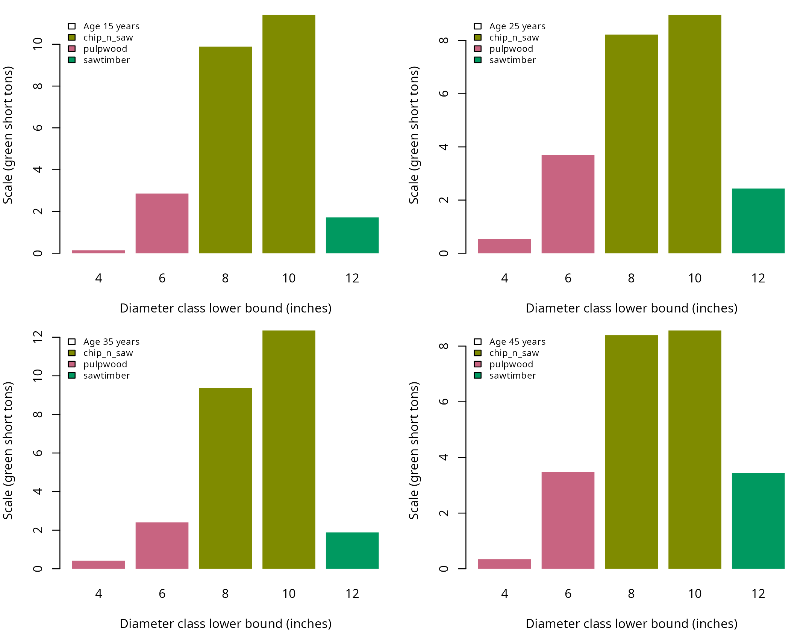

Product order in products() sets cutting priority.
merchandise() produces green short ton yield by product and
stand from the southern tree list.
Products
The products match data-raw/example-products.R.
## Define sawtimber specifications
sawtimber <- product(product = 'sawtimber', ## product name, unitless
spcd = 131, ## species code, unitless
min_dbh = 12, ## inches
min_length = 16, ## feet
max_length = 40, ## feet
trim = 0.5, ## feet
min_sed = 8, ## inches
inside_bark = FALSE, ## logical, unitless
max_logs = 1, ## logs per segment
volume_unit = 'green_ton') ## green short tons
## Define chip n saw specifications
chip_n_saw <- product(product = 'chip_n_saw', ## product name, unitless
spcd = 131, ## species code, unitless
min_dbh = 8, ## inches
max_dbh = 12, ## inches
min_length = 16, ## feet
max_length = 40, ## feet
trim = 0.5, ## feet
min_sed = 6, ## inches
inside_bark = FALSE, ## logical, unitless
max_logs = 1, ## logs per segment
volume_unit = 'green_ton') ## green short tons
## Define pulpwood specifications
pulpwood <- product(product = 'pulpwood', ## product name, unitless
spcd = 131, ## species code, unitless
min_dbh = 5, ## inches
max_dbh = 8, ## inches
min_length = 8, ## feet
max_length = 40, ## feet
trim = 0.5, ## feet
min_sed = 3, ## inches
inside_bark = FALSE, ## logical, unitless
max_logs = 1, ## logs per segment
volume_unit = 'green_ton') ## green short tons
## Combine products in cutting priority order
specifications <- products(sawtimber = sawtimber,
chip_n_saw = chip_n_saw,
pulpwood = pulpwood)
## Retain the complete southern list
trees <- example_trees_southStopper records
## Convert the stopper columns
records <- defects_from_stoppers(
tree_id = trees$tree_id,
ht = trees$ht,
topwood_product = "pulpwood",
saw_stop = trees$saw_stop,
pulp_stop = trees$pulp_stop,
jump_butt = trees$jump_butt
)| tree_id | start_height (feet) | end_height (feet) | effect | product | percent (%) |
|---|---|---|---|---|---|
| 2 | 25.4 | NA | restrict | pulpwood | NA |
| 5 | 40.9 | NA | end | NA | NA |
| 24 | 33.3 | NA | restrict | pulpwood | NA |
| 31 | 34.2 | NA | end | NA | NA |
| 40 | 24.6 | NA | end | NA | NA |
| 49 | 39.0 | NA | restrict | pulpwood | NA |
## Cut and scale the trees
result <- merchandise(tree_id = trees$tree_id,
dbh = trees$dbh,
ht = trees$ht,
spcd = trees$spcd,
products = specifications,
age = trees$age,
defects = records)
## Join logs to stand and diameter
logs <- result$logs %>%
left_join(y = trees,
by = c('tree_id' = 'tree_id'))Product yield
The bars show scale by diameter class within each stand. Totals represent the listed trees, without expansion.
| stand | age (years) | product | diameter class lower bound (inches) | scale (green short tons) |
|---|---|---|---|---|
| south_loblolly_1 | 15 | chip_n_saw | 8 | 9.887 |
| south_loblolly_1 | 15 | chip_n_saw | 10 | 11.402 |
| south_loblolly_1 | 15 | pulpwood | 4 | 0.143 |
| south_loblolly_1 | 15 | pulpwood | 6 | 2.855 |
| south_loblolly_1 | 15 | sawtimber | 12 | 1.717 |
| south_loblolly_2 | 25 | chip_n_saw | 8 | 8.223 |
| south_loblolly_2 | 25 | chip_n_saw | 10 | 8.961 |
| south_loblolly_2 | 25 | pulpwood | 4 | 0.538 |
| south_loblolly_2 | 25 | pulpwood | 6 | 3.700 |
| south_loblolly_2 | 25 | sawtimber | 12 | 2.435 |
| south_loblolly_3 | 35 | chip_n_saw | 8 | 9.369 |
| south_loblolly_3 | 35 | chip_n_saw | 10 | 12.351 |
| south_loblolly_3 | 35 | pulpwood | 4 | 0.418 |
| south_loblolly_3 | 35 | pulpwood | 6 | 2.404 |
| south_loblolly_3 | 35 | sawtimber | 12 | 1.885 |
| south_loblolly_4 | 45 | chip_n_saw | 8 | 8.394 |
| south_loblolly_4 | 45 | chip_n_saw | 10 | 8.561 |
| south_loblolly_4 | 45 | pulpwood | 4 | 0.340 |
| south_loblolly_4 | 45 | pulpwood | 6 | 3.483 |
| south_loblolly_4 | 45 | sawtimber | 12 | 3.438 |

| stand | age (years) | product | scale (green short tons) |
|---|---|---|---|
| south_loblolly_1 | 15 | chip_n_saw | 21.289 |
| south_loblolly_1 | 15 | pulpwood | 2.998 |
| south_loblolly_1 | 15 | sawtimber | 1.717 |
| south_loblolly_2 | 25 | chip_n_saw | 17.184 |
| south_loblolly_2 | 25 | pulpwood | 4.238 |
| south_loblolly_2 | 25 | sawtimber | 2.435 |
| south_loblolly_3 | 35 | chip_n_saw | 21.720 |
| south_loblolly_3 | 35 | pulpwood | 2.823 |
| south_loblolly_3 | 35 | sawtimber | 1.885 |
| south_loblolly_4 | 45 | chip_n_saw | 16.955 |
| south_loblolly_4 | 45 | pulpwood | 3.823 |
| south_loblolly_4 | 45 | sawtimber | 3.438 |
Age limits
The source products have no age limits. Explicit age limits further restrict product eligibility.
## Define sawtimber specifications
sawtimber <- product(product = 'sawtimber', ## product name, unitless
min_dbh = 12, ## inches
min_age = 35, ## years
min_length = 16, ## feet
max_length = 40, ## feet
trim = 0.5, ## feet
min_sed = 8, ## inches
inside_bark = FALSE, ## logical, unitless
max_logs = 1, ## logs per segment
volume_unit = 'green_ton') ## green short tons
## Define chip n saw specifications
chip_n_saw <- product(product = 'chip_n_saw', ## product name, unitless
min_dbh = 8, ## inches
min_age = 20, ## years
max_dbh = 12, ## inches
min_length = 16, ## feet
max_length = 40, ## feet
trim = 0.5, ## feet
min_sed = 6, ## inches
inside_bark = FALSE, ## logical, unitless
max_logs = 1, ## logs per segment
volume_unit = 'green_ton') ## green short tons
## Define pulpwood specifications
pulpwood <- product(product = 'pulpwood', ## product name, unitless
min_dbh = 5, ## inches
max_age = 20, ## years
max_dbh = 8, ## inches
min_length = 8, ## feet
max_length = 40, ## feet
trim = 0.5, ## feet
min_sed = 3, ## inches
inside_bark = FALSE, ## logical, unitless
max_logs = 1, ## logs per segment
volume_unit = 'green_ton') ## green short tons
## Combine products in cutting priority order
specifications <- products(sawtimber = sawtimber,
chip_n_saw = chip_n_saw,
pulpwood = pulpwood)
## Cut and scale the trees
age_result <- merchandise(tree_id = trees$tree_id,
dbh = trees$dbh,
ht = trees$ht,
spcd = trees$spcd,
products = specifications,
age = trees$age,
defects = records)| stand | age (years) | product | scale (green short tons) |
|---|---|---|---|
| south_loblolly_1 | 15 | pulpwood | 2.998 |
| south_loblolly_2 | 25 | chip_n_saw | 17.184 |
| south_loblolly_3 | 35 | chip_n_saw | 21.720 |
| south_loblolly_3 | 35 | sawtimber | 1.885 |
| south_loblolly_4 | 45 | chip_n_saw | 16.955 |
| south_loblolly_4 | 45 | sawtimber | 3.438 |
Age limits change which products qualify. Diameter limits and stopper restrictions still apply.